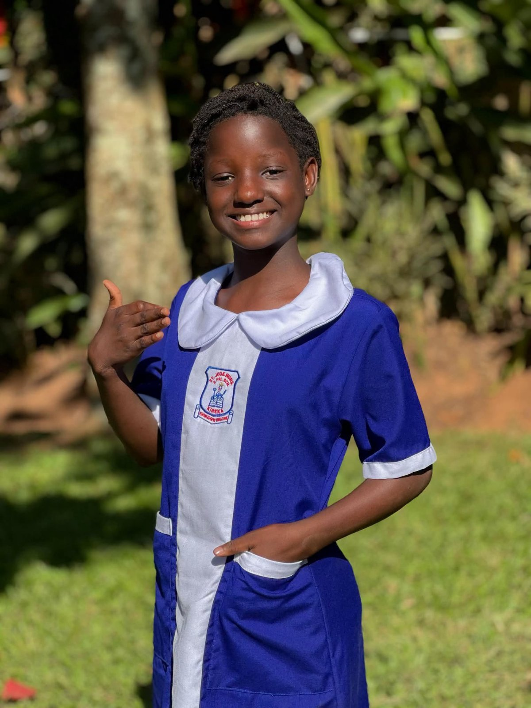

Meet The Namuyomba Foundation
News
Her name is Mirembe Maria, and she lives at the foundation in Uganda’s Mukono district. The foundation says it has been operating for eight years, using dance, song and drama to support children facing hardship. It also appeals to well-wishers to help cover their basic needs and school costs.
Maria’s list of loves is easy to follow: playing, singing, dancing and reciting. Learning is on it too, and she names it as one of the things she enjoys most. Her interest in the news is not just talk. In several skits on the foundation’s page, she plays a news anchor, copying the presenters she watches on television, with the poise of someone who has studied them closely.
The foundation has noticed. It calls her its “young journalist.”
The group is active well beyond the screen. A post dated 5 July shows it appearing at Comedy Festival 2026 at Uma grounds.
Maria closes her video with a question for everyone watching: “What was your dream when you were my age?” Then she thanks the people who support the foundation.
That support is what the foundation hopes to grow. It wants more people to join its work so that the children in its care can have an education and their basic needs met.